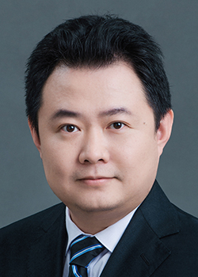

王征(Zheng Wang)，天津大学智能与计算学部人工智能学院，教授&博导。
教育部城市智能与数字治理工程研究中心秘书长
天津市机器学习重点实验室骨干、高维数据分析与系统实验室负责人
神经网络持续学习、智能无人系统自主学习、多智能体协同感知预测和决策
《算法设计与分析》天津市一流课程负责人
- 面向配网源网荷储协同优化的图强化学习技术研究及应用，国家电网总部科技项目, 2024.1-2025.12，负责人
- 多场耦合下岩土质文物仿真模拟技术智能提升与应用示范，甘肃省科技重大专项计划项目, 2023.12-2026.10，负责人
- **数字孪生训练原型系统研发，国家重点研发计划课题, 2024.1-2026.12，负责人
- 脑启发目标域偏移自适应学习技术研究，北京航天自动控制研究所, 2023.6-2024.6，负责人
- ·多维度不确定性驱动的弱目标分割方法研究，国家自然科学基金面上, 2024.1-2027.12，负责人
- 面向**联合****的***智能研判算法，JKW项目, 2023.1-2024.10，技术负责人
- 基于机器学习的焊接缺陷自动判读技术研究，中国船舶工业综合技术经济研究院, 2022.5.1-2023.12.31，负责人
- 基于CPSS的客户侧边缘感知与能源控制技术研究，中国电力科学研究院有限公司, 2021.12.16-2023.10.30，负责人
- 基于显著性的主动学习方法研究及其在医疗影像分析中的应用，国家自然科学基金面上, 2021.1-2024.12，负责人
- 石窟寺岩体稳定性预测评估系统，国家重点研发计划专题，2020.1-2022.12，负责人
- 脑电辅助的复杂背景下目标识别技术研究，北京航天自动控制研究所，2019.7-2020.6，负责人
- X动力系统在线状态监测与故障诊断软件平台, 武汉第二船舶设计研究所, 2019.10-2020.6，负责人
- 面向公共安全的视频信息处理技术研究，国家自然科学基金重点项目，2019/1-2022/12 ，第一参加人
- 智能电网中微网和配网综合优化设计平台开，横向，2018/10-2022/10，负责人
- 古建彩画高光谱图像分类的迁移学习方法研究，国家自然科学基金面上项目，2018/01-2021/12，负责人
- 肿瘤患者的影像大数据诊疗和分析平台，天津市科技支撑重点计划（已结题），2015.4-2017.9，技术负责人
- 基于对象识别与挖掘技术的视频水墨风格化算法研究， 国家自然科学基金青年基金（已结题），2013.1-2015.12，负责人
- 西南部山村新型配电网优化设计综合平台开发，国家重点研发计划，2016.1-2019.12，技术负责人
- 故宫博物院《<兰亭序>交互节目》，横向（结题，在故宫端门展出），2015.1-2015.12，技术负责人